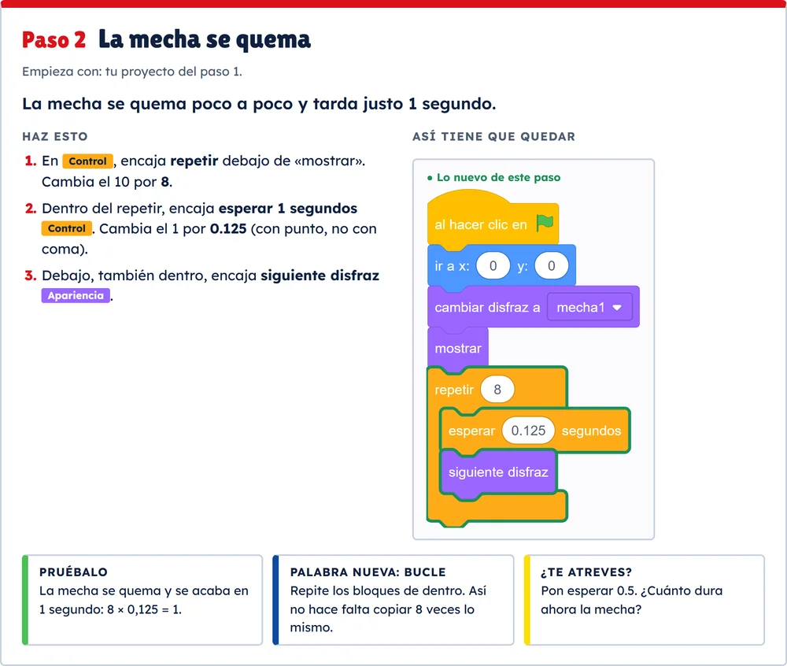

Módulos

Módulo 0
Empieza aquí
15 min · el juego, Up! Steam y cómo usar la formación
Módulo 1
De la idea al juego
45 min · la idea, juegos de ritmo, el boceto y 4 prototipos
Módulo 2
Imágenes y música con IA
45 min · prompts, herramientas y normas
Módulo 3
Scratch paso a paso: un petardo
1 h · pasos 1 a 5
Módulo 4
Scratch paso a paso: la mascletà
1 h 30 min · pasos 6 a 10
Módulo 5
Al aula y a Up! Steam
40 min · sesiones, itch.io y vídeo
Para tu clase
Fichas para el alumnado
Los 10 pasos para montar el juego en Scratch, explicados con palabras de 5.º y 6.º. Una ficha por paso, para proyectar o imprimir.
- Qué vas a conseguir y qué bloques poner, paso a paso.
- El dibujo de cómo tiene que quedar, con lo nuevo en verde.
- Cómo probarlo, una palabra nueva y un pequeño reto.

Cómo usar la formación
- Haz los módulos en orden. Avanza con las flechas del teclado. La tecla B busca dentro del módulo.
- Pon sonido: es un juego de ritmo. En los juegos, pulsa Probar.
- Cada paso de Scratch tiene su proyecto. Descárgalo y ábrelo en scratch.mit.edu con Archivo › Cargar desde tu ordenador.
- Los prompts de las imágenes tienen un botón para copiarlos.
Quién ha hecho esta formación
Esta formación la ha hecho Escuela de Ciencia, organizadora de Up! Steam, la competición del Consejo Social de la Universitat Politècnica de València. Las reglas y fechas de cada edición están en upsteam.es. Las imágenes, la música y parte del código se hicieron con ayuda de inteligencia artificial; el módulo 2 explica qué se hizo y con qué herramientas.